Finds Roon by itself
Discovery uses the API port each Roon Server advertises. When a network blocks it, enter a host — and, under Advanced, the exact API port — and press Save and Connect.
Version 0.2.0 · Public beta · macOS
A small desktop companion that reads playback from your Roon Server over the local network and hands it to the Discord client already running beside it — track, artist, album, progress, and optional cover art. No account, no service of ours, no listening history kept anywhere.
Apple Silicon and Intel builds · MIT licensed · Free
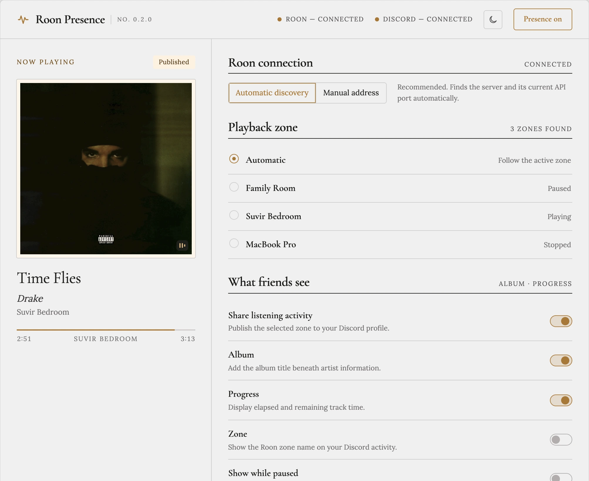
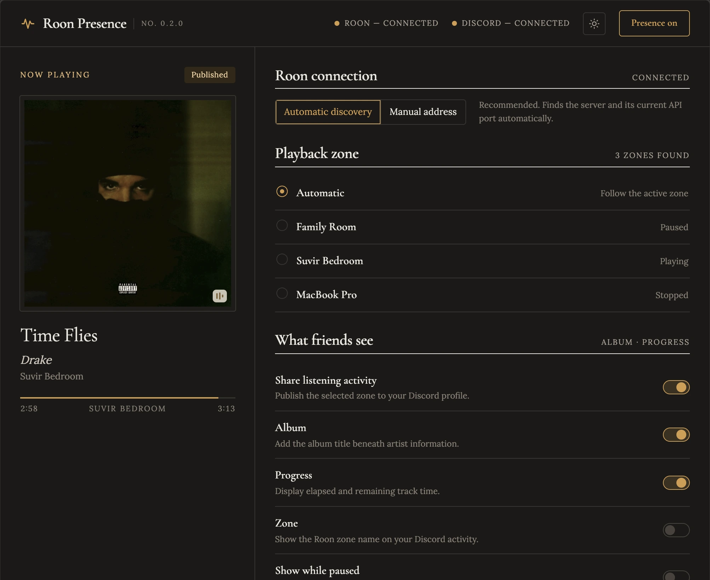
Overview
Set it up once, then let it live in the menu bar.
Discovery uses the API port each Roon Server advertises. When a network blocks it, enter a host — and, under Advanced, the exact API port — and press Save and Connect.
Pin the companion to a single room, or let automatic mode follow whichever zone starts playing.
Album, progress, and zone name are individual switches. Paused activity can stay visible without a timestamp, or disappear entirely.
Turn artwork on and artist and album text go to MusicBrainz to find a public Cover Art Archive image. Off by default, and nothing else leaves the machine.
The interface ships in a cream-and-gold Classical light theme with a dark counterpart, remembered between launches.
Lives in the macOS menu bar — or the Windows and Linux tray — with optional start at login and a hidden launch.
The app
Screenshots taken from a running build connected to a real Roon Server.
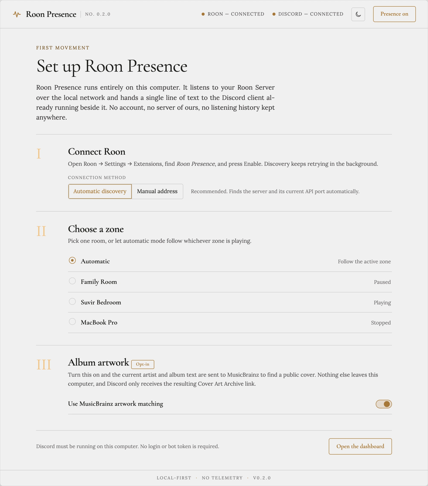
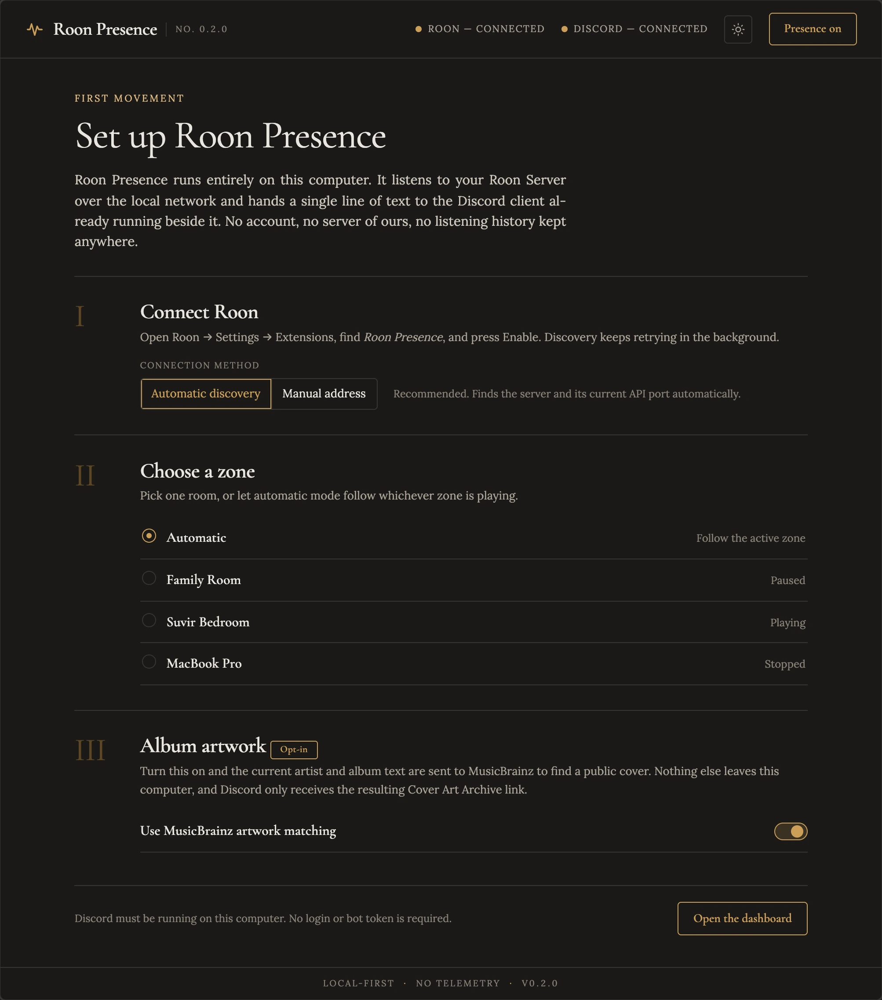
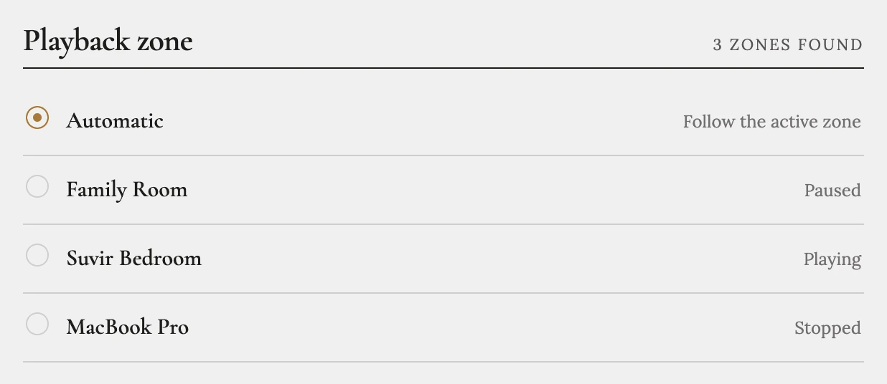
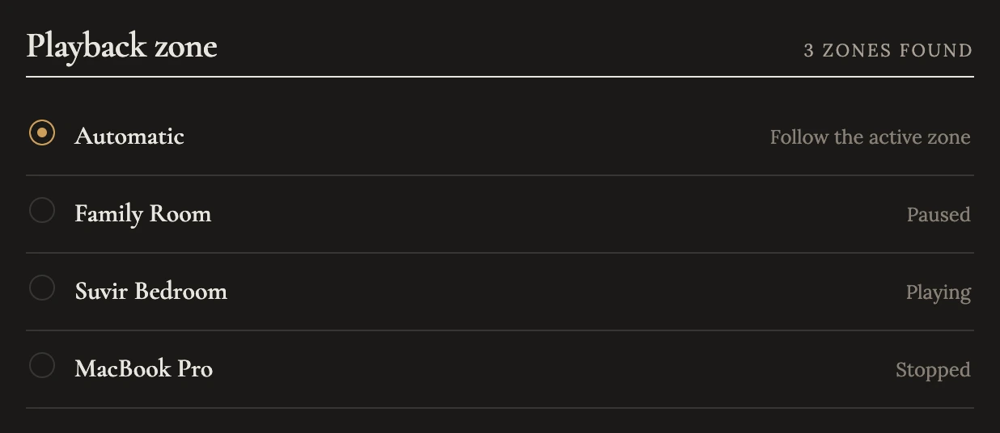
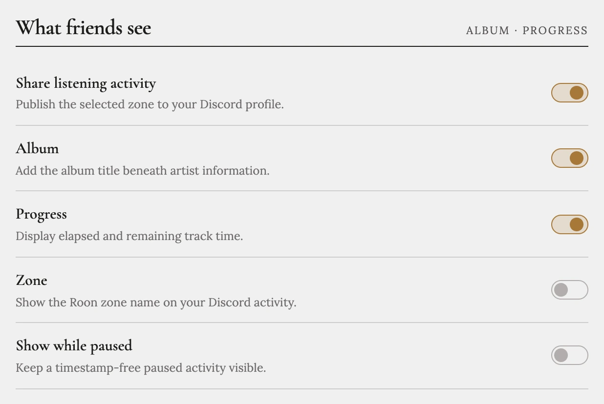
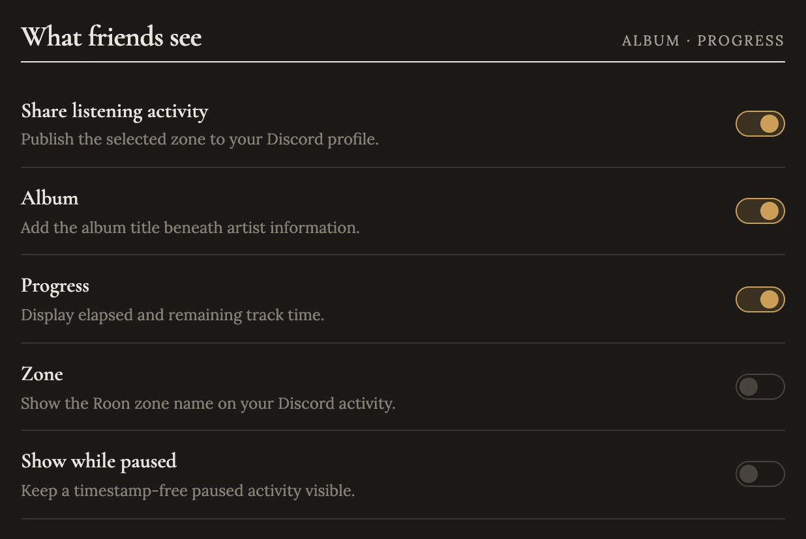
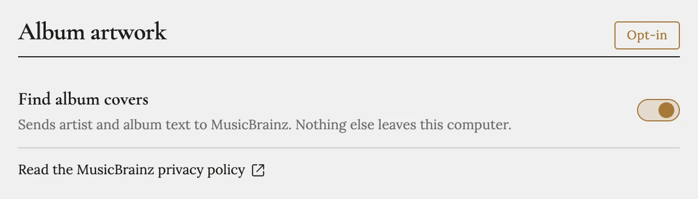
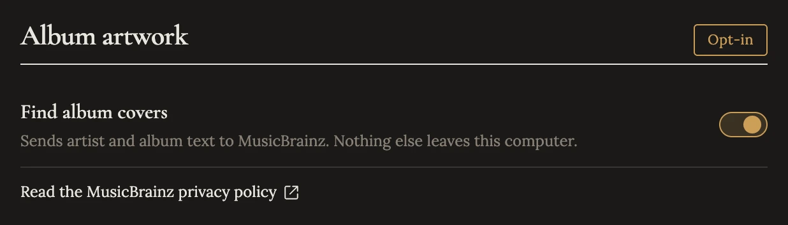
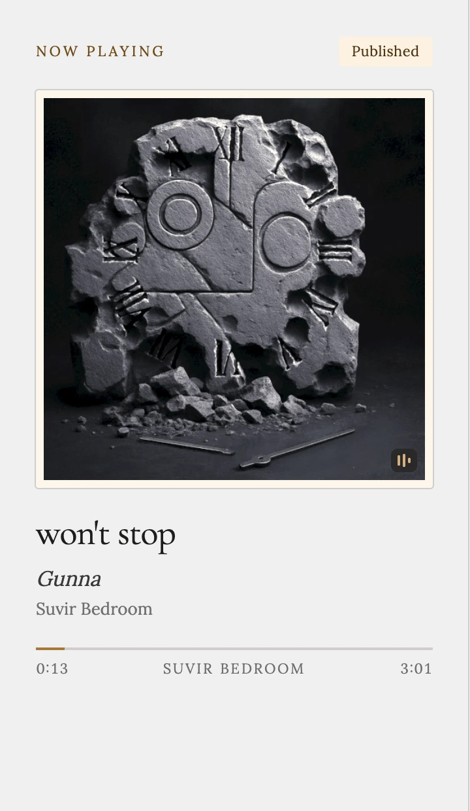
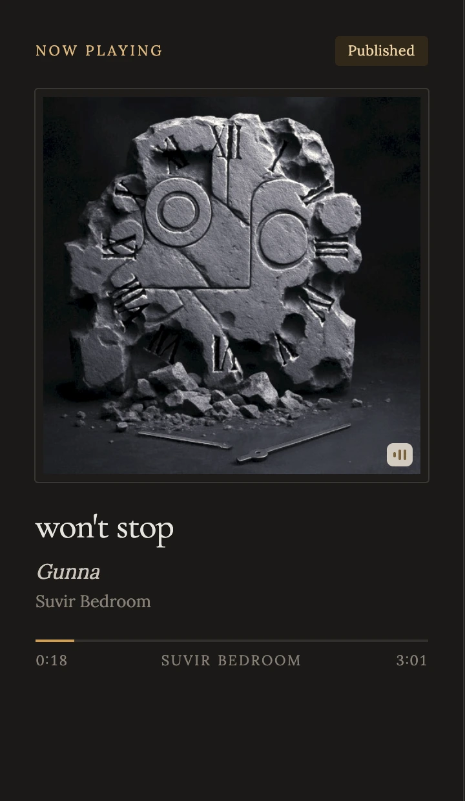
How it works
No remote control plane sits in the middle.
Find Roon on the local network.
Enable the extension inside Roon.
Read the zone you chose.
Apply only the fields you enabled.
Hand it to the local Discord client.
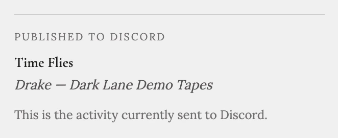
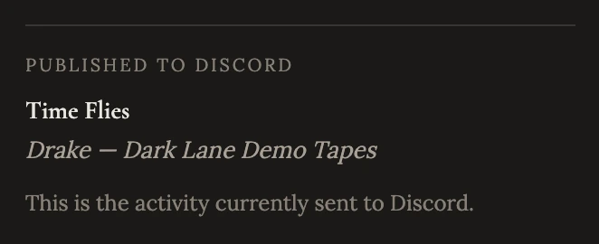
The app shows the exact activity it handed to Discord, and says plainly when nothing is being sent — sharing off, Discord closed, or nothing playing.
Privacy
Local by design
Discovery and playback monitoring stay on your machine and your local network. There is no account, no analytics pipeline, and no automatic diagnostic upload. Roon authorization is kept in the operating system's secure storage when it is available, and the interface's fonts are bundled with the app, so it does not call out on launch.
Read the security modelInstall
macOS is the published target; Windows and Linux build from source.
Take the Apple Silicon (arm64) or Intel (x64) disk image from GitHub Releases and
check it against the published SHA256SUMS-mac-beta.txt.
Beta builds are ad-hoc signed rather than notarized, so Control-click the app and choose Open, then allow Local Network access when macOS asks. Discovery needs it.
Roon → Settings → Extensions → Roon Rich Presence → Enable. If discovery is blocked, enter the server host and press Save and Connect; an exact API port under Advanced is the most direct route.
Pick one room or follow the active zone. The companion updates your Discord activity while music plays and stays in the menu bar after you close the window.
Automatic updates are off in unsigned beta builds — new versions are installed by hand
from Releases. Windows and Linux packages are built locally with
npm run package:win or npm run package:linux.
Latest
Released 17 August 2026.